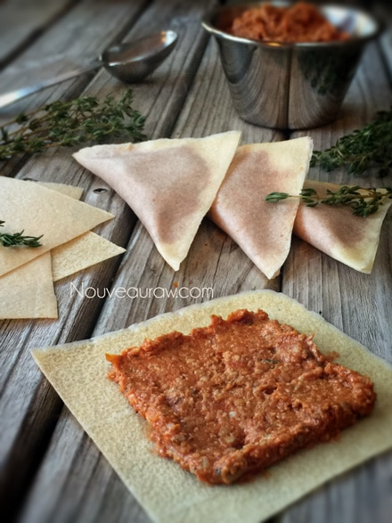
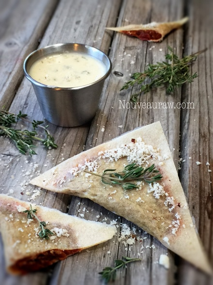
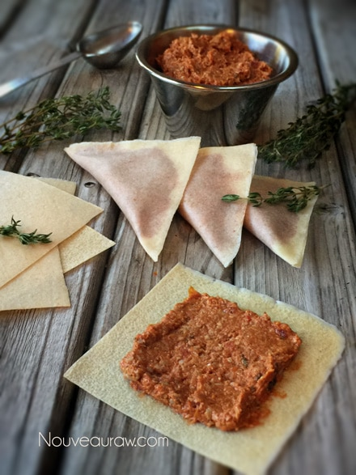
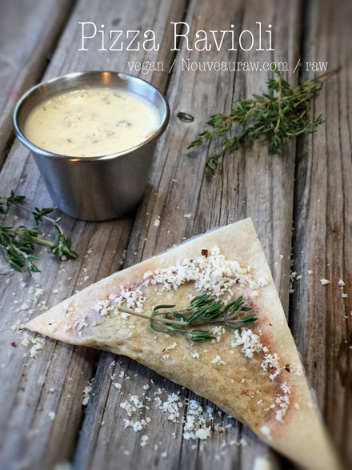
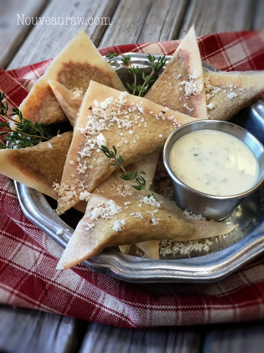

Pizza Ravioli

~ raw, vegan, gluten-free, nut-free ~
I am speechless as I sit here trying to put into words as to how amazing this recipe turned out… hold on, give me a few minutes… I am sure I will find my voice.
Ok, thanks for your patience… :) To create this pizza ravioli, I used sun-dried tomatoes and Italian seasoning, which is a spice mixture popular in many parts of the world that attempts to capture some of the most common flavors of Italian cuisine. It contains a wide range of ingredients, such as rosemary, oregano, thyme, and marjoram. It is a wonderful kitchen “staple” that can add a quick Italian flavor boost to many dishes.
You don’t need to invest in expensive pasta machines or ravioli presses. Simply make or purchase coconut wraps, cut into desired shapes, add a little bit of filling, fold the “dough,” wet the edges, press, seal, and Taada! You have made ravioli. Don’t think that I didn’t notice… I saw you throw up a red flag when I mentioned coconut wraps.
Amie Sue, I don’t want to taste coconut when I am losing myself in an Italian delicacy. I know, I know.. But trust me, you won’t even detect the coconut flavor at all. I think I do a pretty good job creating flavorful recipes… spices are no longer the “monster under the bed” for me. :)
To complement and balance out the richness from the sun-dried tomato-based filling… I highly recommend dipping the ravioli in my raw Discovered Valley Ranch Dressing. The cool, light freshness of the ranch brings ultimate harmony to this dish.
If you would like to create an elegant statement when serving these to your loved ones, sprinkle a little nut “parmesan cheese” on top of each ravioli. To make your own, you can place 2 Tbsp of either Brazil nuts, cashews, almonds, or pine nuts in a grinder along with 1 Tbsp of nutritional yeast. Grind to a powder, and you have an instant dairy-free cheese sprinkle. Enjoy, and please leave a comment below. I love hearing from you! amie sue

Ingredients:
Pizza filling: yields 1 1/4 cups
- 1 cup sun-dried tomatoes
- 1/2 cup raw sunflower seeds, soaked
- 1/4 cup nutritional yeast
- 1 clove garlic
- 1 Tbsp dried Italian seasoning
- 1 Tbsp fresh lemon juice
- 2 Tbsp cold-pressed olive oil
- 1/2 tsp Himalayan pink salt
Coconut wraps:
Preparation:
Pizza filling:
- Place the dried tomatoes and sunflower seeds in bowls, covered with enough water to cover them. Allow them to soak.
- Soaking the sun-dried tomatoes helps to soften them for blending purposes.
- Soaking the sunflower seeds softens them and also reduces the phytic acid, making them easier to digest.
- Once ready to construct the dish, drain and discard the soak water from both.
- In a food processor, fitted with the “S” blade, combine the tomatoes, sunflower seeds, nutritional yeast, garlic, seasoning, lemon, oil, and salt. Process until it forms a thick paste. Set aside.

Coconut wraps:
- You can purchase raw coconut wraps (here) if you are short on time or resources.
- To make homemade wraps:
- Place the coconut meat, water, and salt in the blender.
- Blend until creamy smooth; you don’t want it lumpy or gritty.
- Pour the batter onto the non-stick sheet that comes with the dehydrator.
- Spread it evenly across the sheet into one large square.
- You will cut it into quarters after it has dried.
- Dry at 115 degrees (F) for roughly 4 hours or until it is dry enough to peel off.
- Flip over onto the mesh sheet and dry for about 1 hour or until it isn’t tacky to touch.
- Store in a large zip-lock bag, placing parchment paper in between each piece.
Assembly:
- Cut the coconut wraps into 4 squares if using store-bought.
- If making your own, create 8″ sized squares, then cut into 4 pieces.
- Place 1 Tbsp of pizza filling in the center of each square.
- Spread the filling out, leaving 1/4″ free of filling all around the edge of the coconut wrap.
- Dip your finger in water and wet all four sides of the wrap.
- Fold the wrap in half, going from tip to tip (see photo below). Gently keep pressing the two sides together, creating a sealed edge.
- These can be enjoyed as is or dehydrated to deepen the rich flavors and give it the appearance of being cooked.
- Place on the mesh sheet that comes with the dehydrator and dry at 145 degrees for 1 hour then reduce to 115 degrees (F) for 6-8 hours.
- Store leftovers in the fridge in an airtight container. Lay them in single rows with parchment paper in between so they don’t stick to one another.
Culinary Explanations:
- Why do I start the dehydrator at 145 degrees (F)? Click (here) to learn the reason behind this.
- When working with fresh ingredients, it is essential to taste test as you build a recipe. Learn why (here).
- Don’t own a dehydrator? Learn how to use your oven (here). I do, however honestly believe that it is a worthwhile investment. Click (here) to learn what I use.



© AmieSue.com